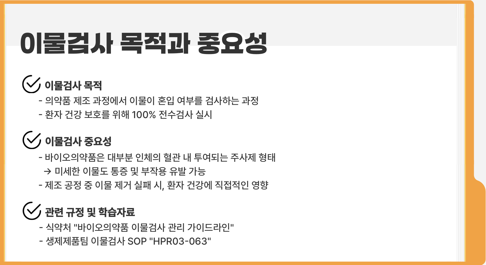

홈
이물검사 목적과 중요성
적격성평가
이물검사 방법
결함 유형별 중요도
이물별 특징 및 확인방법
트레이닝

브라우저가 동영상을 지원하지 않습니다.
prev
next
FRONT
SIDE
BACK
ZOOM
정답 입력
이물 예시
양품, 흰 이물, 검정 이물, 유리 이물,
고무전 이물, 실 이물, 누액,
고무전 높이 불량, 내용량 불량,
시린지 파손, 용기 스크래치
다음 예시